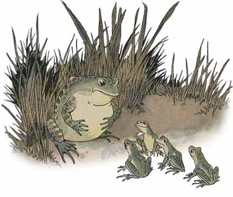
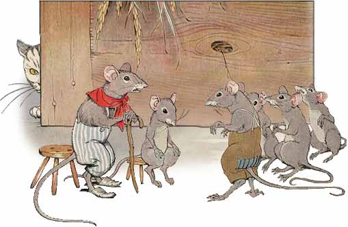

toki musi pi
jan Esopo
toki en sitelen li tan lipu ni:
http://www.read.gov/aesop/sitelen li tan jan Milo Winter
ante toki li tan jan Ne[_nena_esun]
akesi en mani
mani li kama tawa lupa -telo lon poka pi +kasi-palisa tan moku telo. ona li tawa wawa lon telo la ona li anpa wawa e akesi lili lon ma -telo.
akesi suli li pilin -ike tan weka pi ona lili li toki e wile sona pi weka ona tawa akesi sama ona.
akesi ante li toki: “soweli ike suli li noka suli e akesi lili sama mi!”
“suli a!” akesi suli li toki. ona li kama suli e sijelo ona. “ona li suli sama ni anu seme?”
“ala. ona li suli mute!” ona li toki.
akesi li kama suli mute e sijelo ona.

“ona li ken ala suli sama ni.” ona li toki. taso akesi lili li toki e suli mute a pi ++soweli ike. akesi suli li kama suli mute a e sijelo ona. taso sijelo ona li pakala wawa.
o pali ala e ijo pi ++ken ala.
poki kalama sowelipoki-kalama soweli
tenpo wan la soweli lili li kama kulupu li toki e wile weka ona tan soweli ike ona. ona li wile sona e kama soweli. ni la ona li ken tawa weka. kin a. ona o pali e ijo. tenpo -suli la ona li pilin -ike tan palisa luka ona. tenpo pi ++mute ala la ona li tawa ala tan tomo -ona tan ni.
ona li toki -mute. taso ala li pona tawa ona. pini la soweli pi ++lili mute li kama sewi li toki:
“mi pilin e ijo. ona li pona. taso mi sona ala e ken ona.
mi wile taso pana e poki -kalama lon anpa -lawa soweli. poki li kalama la mi sona e kama pi +++soweli ike mi.”
soweli lili ale li pilin -wawa a. tenpo -pini la ona li pilin -ala e ni tan seme? taso ona li kalama pi +pilin -pona la soweli lili sona pi tenpo suli li kama sewi li toki:
“toki pi +++soweli lili ni li pona. taso mi wile sona e ni: sina seme li pana e poki lon soweli ike?”
toki en pali li ante.
soweli tomo en soweli ma

tenpo wan la soweli tomo li tawa soweli sama ona lon ma -selo. moku la soweli ma li pana e palisa -pan e anpa -kasi e kiwen -kasi lili lon poki +pi telo -lete. soweli tomo li moku -lili. lukin la ona li moku e ona tan ni: ona li wile ala ike tawa soweli sama ona.
moku li pini la soweli pona tu li toki -suli. nimi -ante la soweli tomo a li toki e ale +pi ma -tomo. soweli ma li kute taso. ona li kama lape lon supa -kasi pona lon selo -kasi linja li lape -pona pi kalama ala tawa kama -suno. lape ona la soweli ma li soweli tomo. ijo -ale pona pi +ma -tomo li lon sama toki pi +++soweli pona ona. tenpo -suno kama la soweli tomo li toki tawa soweli ma. wile ona la soweli ma li tawa ma -tomo lon poka -ona. soweli ma li wile kin.
ona li kama lon tomo -suli pi ++soweli tomo la ona li lukin e pini pi ++moku suli lon supa. pan suwi en ko suwi en ko jelo pona en moku ale pona li lon. soweli tomo li open moku e pan suwi la ona li kute e kalama wawa pi soweli ike lon lupa. pilin -ike la soweli li len e ona -sama li awen pi +tenpo -suli. pini la ona li tawa supa -moku lon tenpo -sin. jan -pali tomo li kama li weka e moku tan supa. soweli suli li kama lon monsi ona.

soweli ma li tawa tomo -lili pi ++soweli tomo li kama jo e poki -ona e ilo -len ona.
“sina jo e ijo -mute pi +pona -mute. mi jo ala e ona.” ona li open tawa weka. “taso moku -lili en lon -lili pona mi li pona tawa mi tan ni: ma -mi la mi ken awen pona.”
ijo -lili en awen -pona li pona. mute en pilin -ike en sona -ala li ike.
soweli loje en kili loje

tenpo -suno wan la soweli loje li lukin e kulupu pona pi ++kili loje lon linja pi ++kasi -suli. kili li jo ale e telo. ona li lukin e kili la uta pi ++soweli loje li pana e telo mute.
kulupu li lon sewi kasi. soweli li wile e ona la ona li wile tawa sewi. tenpo nanpa wan la ona li tawa sewi. taso ona li kama ala lon poka. ni la ona li tawa weka lili li tawa wawa sin tawa ona. taso ona li kama ala lon poka lon tenpo -sin. tenpo -mute la ona li lukin tawa ona. taso ona li ken ala.
tenpo -ni la ona li kama anpa li lukin pi +pilin -ike e kili.
“mi nasa a.” ona li toki. “mi pali mute tawa kili nasa ike.”
ona li tawa weka pi ++pilin -ike mute.
ijo pi weka ona li ike li lili tawa jan -mute.
soweli en waso pi uta palisasoweli en waso pi++uta palisa

soweli li moku pi wile ike. palisa kiwen sijelo li kama awen ike lon anpa -uta ona. ona li ken ala tawa e ona li ken ala moku. ni li ike mute tawa soweli ni pi wile ike.
ni la ona li tawa waso pi uta palisa. pilin -soweli la waso li ken weka e kiwen -ike tan uta soweli kepeken uta palisa ona.
sina weka e kiwen sijelo ni la mi pana -pona tawa sina.” soweli li toki.
waso li pilin -ike tan uta wawa pi ++soweli ni. taso ona li lon e wile soweli.
kiwen li kama weka la soweli li open tawa.
“taso sina pana -ala e ijo tawa mi!” waso li kalama wawa pi +pilin -ike.
“a!” soweli li mu ike li tawa -sike. “mi pana kin tawa sina. sina pana e lawa sina lon uta mi. mi moku -ala e ona.”
o wile ala e pana pi +jan -ike.
soweli wawa en soweli lili

soweli wawa li lape lon ma -kasi. lawa ona li lon luka -wawa ona. soweli lili li kama lon poka -ona. pilin -ike pi ++soweli lili la ona li tawa lon nena -sinpin pi ++soweli wawa. soweli wawa li kama lon li luka -suli pi +pilin -utala e soweli lili li wile moli e ona.
“o awen e mi!” soweli lili li toki -wile. “o ken e tawa mi. tenpo -suno wan kama la mi pana -sama tawa sina.”
pilin pi ++soweli lili li musi tawa soweli wawa. nasin seme la soweli lili li ken pana tawa ona? taso ona li pona li weka e luka -ona.
tenpo -suno kama la soweli wawa li alasa lon ma -kasi. len -poki pi +jan -alasa li kama len e ona. ona li ken ala weka. ni la ona li mu wawa pi +pilin -utala. soweli lili li sona e mu ona li kama lon poka pi ++soweli wawa tawa lon len. ona li tawa linja len li pakala e ona kepeken uta. soweli wawa li weka tan len.
“pana mi li musi tawa sina.” soweli lili li toki. “tenpo -ni la sina sona e ken pi ++soweli lili.”
pali pona li lili ala.
pipi lili en mani

pipi lili li tawa lon sewi ma li kalama suli pi ++ijo lili li kama lon palisa lawa pi soweli mani. ona li lape -lili la ona li open tawa. ona li toki tawa mani -suli.
“pilin mi la weka mi li pona tawa sina.” ona li toki.
“ona li suli -ala tawa mi.” mani li toki. “mi sona ala e lon sina.”
tenpo -mute la mi suli tawa mi li lili tawa jan -poka. ijo pi +lawa -lili li suli mute tawa ona -sama.
kasi pi kili alakasi pi+kili-ala

jan -tawa tu li tawa lon anpa pi +++suno wawa sewi li alasa e pimeja pi +kasi -suli tan lape. ona li lukin e lipu -kasi pona la ona li kama sona e ni: ona li kasi pi +kili -ala.
“a kasi pi +kili -ala li ike a!” jan -wan li toki. “ona li pana e kili -ala a li pana -taso e lipu -jaki ona lon anpa.
“jan ike pi +pilin -ike o!” kalama li kama tan kasi. “sina lape lon pimeja lete mi. taso toki -sina la mi ike! jan -sewi Jupite[_jan_unpa_pakala_ijo_tenpo_en] o, jan li pilin -ike tan ijo -pona!”
tenpo -mute la ijo pi +pona -mute li suli -ala tawa mi.
waso en pipi kalama

waso li lape lon tenpo -suno ale. suno li kama anpa la ona li pana e suno loje pi +kama -weka. pimeja li kama li tawa pi +wawa -lili lon ma -kasi. ni la waso li kama tan lupa -kasi li tawa e sijelo -ona e lukin -ona. tenpo -ni la mu nasa ona li kalama lon ma pi ++kalama ala. ona li open alasa e pipi e akesi e soweli lili.
waso suli ni li kama suli mute la ona li kama pilin -ike. ijo -mute li kama pona -ala tawa ona. ijo li pini e lape ona la ona li ike -mute. tenpo -suno wan pi +tenpo -seli la ona li kama lape lon lupa -ona lon kasi -suli. pipi poka li kalama. ona li kalama pi +pilin -pona. taso ona li ike tawa kute. lawa waso li kama tan lupa -kasi.
“o weka tan ni.” ona li toki tawa pipi. “sina ike anu seme? mi suli mute li wile lape lon kalama ala.
taso toki -pipi la pipi li ken awen lon ni sama waso. ni la ona li wawa e kalama ona.
sona -waso la toki -utala li ike. suno la lukin -ona li pona -ala. ni la ona li ken ala pakala e pipi. ante la ona li toki -pona tawa ona:
“pipi o.” ona li toki. “mi wile awen lon la kalama ona o kama pona tawa mi. a mi jo e telo kili nasa pona pi nena -sewiOlinpo[_olin_lawa_ijo_nena_pona_open]. jan -sewi Apolon[_a_pana_open_lukin_ona_nena] li moku e ona li kalama musi tawa jan -sewi ante. o kama lon ni. o moku e telo -pona ni lon poka -mi. sona -mi la ona li pona e kalama musi sina sama jan -sewi Apolon a.”

nimi -pona waso li pona tawa pipi nasa. ona li kama sewi tawa lupa -waso. taso ona li kama poka la waso li ken lukin e ona li moku ale e ona.
toki -pona pi +lon -ala li olin lon ala. o awen wawa. toki -pona pi +jan -ike li ike.
kasi palisa en kasi linjakasi-palisa en kasi-linja

kasi -palisa pi ++suli mute li awen lon poka pi ++ telo -linja lili. kasi -linja mute li lon telo. kon li tawa la kasi -suli li awen palisa wawa. luka -ona li awen sewi. taso kasi -linja li tawa anpa lon kon tawa li kalama pi +pilin -ike.
“mi sona e pilin -ike sina.” kasi -suli li toki. “kon -lili li tawa -lili e supa -telo li tawa -mute e sina. taso mi kasi -wawa. mi awen palisa li awen wawa lon kon ike pi ++wawa mute.”
“o pilin -ike ala tan mi.” kasi -lili mute li toki. “kon li ike ala tawa mi. ona li tawa e mi. taso mi pakala ala. sina pilin -pona tan wawa sina. sina awen pona. taso pini li kama.”
kasi -linja li toki la kon sike wawa li kama tan ma -lete. kasi -suli li awen wawa li utala e kon ike. kasi -linja li tawa anpa. kon li kama wawa mute a. ni la kasi -suli wawa li kama pakala li kama anpa. noka ona li kama weka tan ma. ona li awen lon anpa lon poka pi +kasi -linja.
utala li ike la o pini. ante la sina kama pakala.
waso en poki

tenpo pi +telo -ala la waso li moku -lili e telo. waso pi ++wile moku li lukin e poki pi +telo -lili. taso poki li suli. telo li lon anpa. waso li ken ala uta e telo. pilin -ona la ona li kama moli tan wile moku.
taso ona li pilin e ijo. ona li kama jo e kiwen -lili li pana e ona li poki. kiwen li kama lon poki la telo li kama sewi li kama lon poka pi ++uta waso. ni la ona li ken moku.
sona li pona lon tenpo -ike.
soweli utala tu

soweli tu li tawa musi lon supa -kiwen sewi lon poka pi +nena -suli. ona -tu li kama lon poka pi +ona -sama lon poka -lupa. soweli wan li lon poka -wan. soweli ante li lon poka -ante. anpa la telo li tawa -wawa. sijelo pi +kasi -moli li wan e poka -tu. ona li nasin lili li kama e pilin -ike lon soweli wawa kin. taso soweli tu ni li pilin -ike ala. ona la ona -sama li suli taso. ni la ona li awen ala tan ona -ante.
soweli wan li noka e kasi li open tawa. soweli ante li sama. insa pi +sijelo -kasi la ona -tu li kama lawa e ona -ante. soweli ala li tawa. ni la ona -tu li tawa anpa. telo wawa li tawa weka e ona.
ike li kama la o utala ala.
soweli pi palisa sinpin en soweli lojesoweli pi+palisa-sinpin en soweli loje

soweli li wawa e palisa ona kepeken anpa -kasi la soweli loje li kama. tenpo -mute la soweli loje li wile ike musi e soweli poka ona. lukin la soweli loje li lukin +pi pilin -ike lon sike tan ijo ike kama. taso soweli palisa li awen pali.
“sina pali e ni tan seme?” soweli loje li toki. “lukin la ijo ike li lon ala.”
“lon.” soweli palisa li toki. “taso ijo -ike li kama la mi ken ala pali. palisa utala mi o pona. ante la mi kama pakala.”
pona -utala li kama e pini -utala.
waso

waso li tawa pi +wawa -lili lon poka pi +telo -linja. ona li lukin e telo -pona. linja ona pi +anpa -lawa en uta palisa ona li ilo pi ++kama moku. telo li jo mute e kala. taso ona -ala li pona tawa ona.
“kala -lili li ike tawa mi.” ona li toki. “ona li ike tawa waso suli sama mi.”
kala -pona li kama lon poka.
“ike kin.” waso li toki. “mi wile ala open e uta mi tawa kala sama ni!”
suno li kama sewi la kala li weka li tawa anpa pi telo suli lete. waso li lukin e kala -ala. pini la pipi lili li moku pona tawa ona.
o wile suli ala. ante la ijo -ike anu ijo -ala li awen tawa sina.
soweli en waso pi luka pimejasoweli en waso pi+luka-pimeja

tenpo -suno wan la soweli loje li wile kama musi li wile ike e waso pi +luka -pimeja. waso li nasa lukin li musi lukin tawa soweli.
“o kama moku lon poka -mi.” ona li toki tawa waso. ona li pilin -pona tan musi -ike ona. waso li wile kama li kama pi wile moku pona.
moku la soweli li pana e moku telo. taso ona li lon supa -lili. waso li ken telo -lili taso e uta ona li ken ala moku e ona. taso soweli li moku pona e ona. ona li wile ike tawa waso la ona li moku wawa e ona tan musi -ike ona.

ni li ike -mute tawa waso. taso ona li awen pona li utala ala. ante la ona li toki e wile ona tawa soweli. sama la ona li wile pana e moku tawa soweli. kama la soweli li tawa waso lon tenpo -moku. waso li pana e kala pi ++kon pona. taso ona li lon poki -suli. waso li ken moku pona e ona kepeken palisa -uta suli ona. taso soweli li ken ala uta e ona. ona li ken pilin -kontaso e ona. ni la soweli li kama pilin -utala. waso li toki:
musi -ike pi +jan -poka li ike tawa sina la o musi -ike ala e ona.
soweli pi palisa lawa en sitelen onasoweli pi+palisa-lawa en sitelen ona

soweli pi palisa lawa li moku e telo li lukin e sitelen ona lon telo. nena pi palisa lawa ona li pona tawa ona. taso noka lili ona li ike tawa ona.
“ni li lon tan seme?” ona li toki pi pilin ike. “lawa mi li pona -mute lukin tan palisa -pona mi. taso noka mi li ike -lukin.”
tenpo -ni la ona li pilin e kon pi soweli wawa li tawa weka kepeken tenpo -lili. taso ona li tawa wawa la palisa lawa ona li kama awen lon luka -kasi. soweli wawa li kama lon. pilin pi soweli palisa la noka ona pi ike -lukin li ilo -pona. taso palisa lawa ona li kama e pakala ona.
tenpo -mute la ijo pi +pona -lukin li pona tawa mi. ilo li ike tawa mi lon tenpo -mute.
waso loje en soweli loje

tenpo -suno pi ++pimeja kama la suno li tawa anpa. waso suli sona li tawa sewi kasi. ona li wile kama lape li tawa -wawa e luka ona li mu wawa. ona li open kama lape la ona li lukin e ijo -loje e nena -sinpin suli. anpa la soweli loje li lon.
“sina kute ala kute e ijo -sin?” soweli loje li toki -wawa pi +pilin -pona.
“ijo -sin seme?” waso li toki pi +wawa -lili. taso ona li pilin -nasa tan soweli loje ike.
“kulupu mama sina en kulupu mi en kulupu pi soweli ale li wile weka e ante ona li wile awen pona tawa tenpo -ale. ona li pona a! mi wile luka -pona e sina. o kama anpa. mi o pilin -pona lon poka tan pona ni.”
“a pona!” waso li toki. “mi pilin -pona kin tan ijo -sin ni.” taso ona li toki -wawa ala li lukin e ijo lon weka.
“sina lukin e seme?” soweli li toki pi ++pilin -ike lili.
“a kulupu pi ++soweli wawa li kama. ken la ona li kute e ijo -sin li—…”
taso soweli loje li awen -ala. ona li tawa weka.
“o awen.” waso li kalama. “sina tawa tan seme? soweli wawa li pona tawa sina lon tenpo -ni!”
“lon.” soweli loje li toki. “taso ken la ona li kute ala e ijo -sin. ante la mi wile pali e ijo.”
waso li pilin -pona li kama lape pona. soweli loje li sona. taso waso li sona -mute. toki -waso pi +lon -ala la ona li ken weka e soweli loje.
tenpo -mute la jan pi +lon -ala li kute e toki +pi lon -ala.
soweli loje en mani

soweli loje li tawa anpa pi +lupa -telo. ona li suli mute ala. taso ona li ken ala kama lon sewi. ona li awen lon tenpo -suli la mani -lili pi wile moku li kama. pilin mani la soweli li moku e telo lon anpa. ona li wile sona e pona -telo.
“telo ante pi +ma -ale la ona li pona -mute a.” soweli sona li toki. “o kama anpa. o moku e ona. mute pona li lon tawa mi -tu.”
mani pi ++wile moku li tawa anpa wawa li kama moku e ona. wawa -sama la soweli loje li kama lon sewi mani li kama weka tan lupa.
tenpo -ni la mani pi +sona -lili li sona e pakala ona. ona li toki e wile sewi ona tawa soweli. taso soweli loje li open tawa ma -kasi.
“sona -sina li mute sama linja pi ++anpa -lawa sina la sina tawa anpa ala tan ni: sina ken ala kama sewi sin.”
o sona e pakala kama.
soweli loje en soweli wawa

moku suli li pini la soweli loje en soweli wawa li lape -lili li toki -musi e sijelo -ona. soweli wawa li pilin -pona tan selo -pona ona pi ++sike -lili mute. ona li toki -ike tawa soweli loje tan sijelo -ike ona.
soweli loje li pilin -pona tan linja monsi ona pi pini -walo. taso sona -ona la sijelo -ona li pona -mute ala sama soweli wawa. taso ona li awen toki -musi ike kepeken sona -ona. soweli wawa li kama pilin -utala. taso soweli loje li kama sewi.
“sijelo -sina li pona.” ona li toki. “taso pona la lawa sina o pona. ni li pona lon.”
sijelo -pona li sama ala lawa -pona.
akesi en soweli lili

soweli pi ++lili mute li lukin kama musi li tawa lon poka pi ++telo akesi. akesi li lukin e soweli la ona li tawa poka -telo li mu:
“sina wile ala wile kama lon ma -mi? mi ken pana e musi tawa sina.”
soweli lili li wile mute lukin e ma -ale. taso ona li ken ala tawa pona lon telo.
akesi li pilin e ijo. ona li wan e noka ona e noka soweli kepeken linja -kasi wawa. ni la ona li tawa -telo. monsi ona la soweli lili pi ++sona -lili li kama. soweli lili li wile tawa ma lon tenpo -sin. taso akesi li wile ante. ona li tawa anpa -telo li moli telo e soweli lili. ona li wile weka e linja -kasi tan noka ona. taso waso li kama. ona li lukin e sijelo pi ++soweli moli li jo weka e ona. noka akesi en noka soweli li awen wan. ni la waso li jo e ona -tu tawa moku ona.
jan pi ++wile pakala li kama pakala.
soweli ike pi selo ponasoweli ike pi+selo-pona

soweli ike li ken ala kama moku pona tan jan pi +awen -soweli. taso tenpo -pimeja wan la ona li lukin e selo -soweli weka. tenpo -suno kama la ona li kepeken len e selo li tawa ma -soweli. soweli lili li tawa lon monsi ona. ona -tu li tawa weka. soweli ike li moli e soweli lili.
tenpo -pimeja ni la soweli ike li tawa ma -soweli lon poka -soweli. taso pimeja ni la jan -awen li wile moku e soweli. ni la ona li jo e ilo -moli li tawa ma -soweli li moli e soweli ike.
jan -ike li kama pakala tan ike -ona.
waso wawa en pipi

tenpo wan la pipi li wile awen e soweli lili tan waso wawa tan ni: soweli lili li kama tawa pipi li wile e awen ona. taso waso wawa li kama anpa lon soweli. kon wawa pi +luka -waso li weka e pipi. pipi li pilin -utala mute li tawa tomo -waso li tawa anpa e sike waso. ona li pakala e sike ale. pilin -ike waso li wawa mute a. taso ona li sona -ala e pali pipi.
sike suno kama la waso li pali e tomo -ona lon nena -suli. taso pipi li lukin e ona li pakala sin e sike. pilin -ike wawa la waso li toki tawa jan -sewi Jupite[_jan_unpa_pakala_ijo_tenpo_en]. waso li pana e sike ona lon noka ona. taso pipi li tawa lawa pi jan -sewi Jupite[_jan_unpa_pakala_ijo_tenpo_en]. ona li kama sewi li weka e pipi. taso sike li tawa anpa tan noka ona.
ni la pipi li toki tawa jan -sewi Jupite[_jan_unpa_pakala_ijo_tenpo_en]. toki -ona la ona li pali e ni tan ike waso. jan -sewi Jupite[_jan_unpa_pakala_ijo_tenpo_en] li sona e toki -ona. jan -sewi Jupite[_jan_unpa_pakala_ijo_tenpo_en] li kama e ni: waso li pana e sike ona lon tenpo pi +kama -seli tan ni: pipi li lape lon tenpo -ni.
jan pi +wawa -lili kin li ken pana -sin e ike.
mama en soweli

tenpo pi +kama -suno la soweli pi ++wile moku li alasa lon poka -tomo pi +ma -tomo. ona li kute e kalama pi +jan -sin li kute e toki -mama:
“jan -lili o pini! o pini e kalama sina. ante la mi pana e sina tawa soweli!”
toki -ni li nasa tawa soweli. taso ona li pilin -pona tan moku pona. ni la soweli li awen lon anpa pi +lupa -tomo li awen tan jan -lili kama. jan -lili li awen kalama. taso soweli li kama moku ala. tenpo -pimeja la ona li kute e toki -mama lon tenpo -sin. mama li awen lon poka -lupa li kalama musi lape tawa jan -ona.
“jan -lili o, pona! soweli li moku ala e sina. ala a! mama -mije li lukin. soweli li kama lon poka la mama li moli e ona.”
ni la mama -mije li kama lon poka -tomo. soweli li tawa weka.
toki -ale ala li lon.
soweli pi tawa wawa en akesi pi tawa lilisoweli pi+tawa-wawa en soweli pi+tawa-lili

tenpo wan la soweli pi +tawa -wawa li musi -ike tan akesi pi +tawa -lili.
“sina tawa ala tawa?” ona li toki li kalama tan musi -ike.
“tawa.” akesi li toki. “sina la mi tawa -lili. taso mi ken tawa -pona. mi -tu o utala tawa.
soweli li pilin -musi tan toki -ni. ona li wile utala tawa tan musi. soweli loje li pana e pona tawa ona li sitelen e nasin pi utala tawa ona li open e tawa ona.
tenpo -lili la soweli pi +tawa -wawa li lon weka. ona li wile musi -ike tan akesi. ni la ona li lape -lili lon poka -nasin li awen tan kama -akesi.
akesi li awen tawa -lili. taso ona li tawa -pona. ona li kama lon poka pi ++soweli lape li awen tawa. soweli li awen lape li sona -ala e kama -akesi. ona li pini lape la akesi li lon pini nasin. soweli li tawa -wawa mute. taso ona li pini lon monsi akesi.
tenpo -ale ala la jan -wawa li pini -pona lon utala.
soweli en sitelen ona

jan pi ++esun soweli li pana e palisa -sijelo tawa soweli. soweli li jo e palisa lon uta li tawa tomo -ona. ona li kama lon nasin lon sewi pi +telo -linja li lukin anpa e telo. supa -telo la ona li lukin e sitelen pi +ona -sama. taso lukin pi soweli nasa la sitelen ona li soweli ante pi +palisa -suli.
ona li awen la ona li ken sona e sama -ona. taso ona li awen -ala. ona li weka e palisa -ona li tawa palisa pi ++sitelen ona lon telo. ona li kama ala jo e palisa. ona li tawa lon telo tawa poka -telo. ona li kama lon ma li pilin -ike tan weka pi ++palisa -pona ona. ona li soweli nasa a.
wile suli li nasa.
soweli loje en waso kalama

tenpo -suno wan pi +kama -suno la soweli loje li alasa lon ma -kasi li lukin e waso pimeja lon luka -kasi sewi. ona li lukin e waso mute. taso waso ni li jo e moku ko lon uta ona.
“a mi wile ala awen alasa.” soweli loje sona li toki lon lawa ona. “moku -lili li lon tawa mi.”
ona li kama lon poka pi +kasi -waso li lukin -sewi tawa waso. soweli li toki. “waso pi +pona -lukin o, suno -pona a!”
waso li lukin pi ++pilin -ike lili e soweli. ona li jo wawa e moku lon uta ona li toki -ala tawa soweli.
“ona li pona -lukin a!” soweli li toki. “selo -ona li suno a! sijelo pona a! luka -pona a! ona li kalama pona tawa mi la mi ken kama sona e pona -ale ona.”
waso li kute e toki -pona ni li pilin -ike ala. ona li wile pona -mute tawa soweli. ni la ona li open e uta ona li kalama wawa. taso moku ona li kama anpa li tawa uta open soweli.
“pona tawa sina.” soweli sona li toki -pona li kama weka. “kalama sina li pona -lon. taso lawa -sina li pona -ala.”
jan -ike pi +toki -pona li kama jo ike e ijo -pona tan jan -kute.
pipi lili en waso

waso li lukin e ni: pipi lili li tawa anpa lon telo. pipi li utala e telo li wile tawa ma. pilin -ike ona la waso li pana e linja -kasi lon poka -pipi. pipi li jo wawa e linja li tawa poka -telo.
tenpo -kama la pipi li lukin e ni: jan li wile moli e waso kepeken kiwen. jan li kama pana e kiwen la pipi li uta e anpa -noka jan. pilin -ike la jan li pana -ike e kiwen li utala ala e waso. waso li tawa weka li awen pona lon ma -kasi weka.
pali pona li lili ala.
jan en jan sowelijan en jan-soweli

tenpo pi +pini -mute la jan li kama sona e jan -soweli pi +ma -kasi. ona -tu li kama pona li awen lon tomo -jan. taso tenpo -pimeja lete wan la ona li tawa tomo. jan li pana e kon uta tawa luka -ona.
“sina pali e ni tan seme?” jan -soweli li toki.
“mi wile seli e luka -mi.” jan li toki.
ona li kama lon tomo la jan li pali e poki -tu pi ++telo moku. ona li pana e ona -seli lon supa. pilin -pona la jan -pona tu li kama anpa lon supa li moku pona. taso jan li pana -sin e kon uta tawa poki -moku ona.
“sina pali e ni tan seme?” jan -soweli li toki.
“mi wile lete e moku mi.” jan li toki.
wawa la jan -soweli li kama sewi li tawa lupa -tomo.
“awen pona.” ona li toki. “mi sona -pona e sina. kon jan li seli li lete la ona li ike tawa mi!”
jan li toki tawa kulupu utala tu la ona li pona tawa kulupu ala.
soweli en kute ona

soweli lawa li moku e soweli la ona li kama pakala tan palisa -lawa ona. ona li pilin -ike mute tan palisa -lawa ike. ni la ona li toki -lawa tawa soweli ante poka. ona o weka tan ma -ona lon tenpo -suno ni.
soweli ale li pilin -ike tan toki -lawa ni. soweli ale pi +palisa -lawa li kama tawa weka. soweli pi kute suli li jo ala e palisa -lawa. taso soweli lawa li ike tawa ona. lape -ona la ona li lukin e soweli lawa ike.
ona li kama tan lupa lon open pi +tenpo -suno la ona li lukin e selo -pimeja pi kute suli ona li kama pilin -ike mute.
“pipi poka mi o!” ona li toki. “mi tawa. pilin -mi la kute mi li palisa -lawa tawa soweli. mi ken ala ante e pilin -ona.”
o ken ala e ike pi +jan -ike.
jan pi alasa kala en kala lilijan pi++alasa kala en kala-lili

jan pi ++alasa kala li kama jo e mani -lili tan alasa ona. tenpo -suno ike wan la ona li kama jo taso e kala -lili. ona li pana e kala lon poki la kala li toki:
“jan -alasa o awen e mi! mi lili mute li mani -lili. mi kama suli la mi moku pona.”
taso jan -alasa li pana e ona lon poki.
“mi weka e sina la mi ike.” ona li toki. “lili sina li suli -ala. mi jo ala e kala -ante. ni la sina pona.”
toki -suli li mani ala. jo -lili li mani.
soweli ike en soweli lili

palisa -lawa pi ++soweli lili li kama suli. ni la ona li pilin e ni: ona li soweli suli li wile ala e mama. tenpo -pimeja wan la kulupu ona li kama weka tan ma -supa. mama -ona li kalama tawa ona. taso ona li kute ala. ona li awen -moku lili e kasi. kulupu ona li weka.
ona -taso li lon. suno li kama anpa. pimeja suli li tawa -lili lon anpa. kon -lete lili li kama lon poka -ona li kalama ike e kasi -anpa. soweli lili li pilin -ike pi ++soweli ike. ona li tawa nasa lon ma -supa li kalama tawa mama -ona. taso soweli ike li lon poka lon kulupu pi +kasi -suli!
sona pi ++soweli lili la ona li ken kama moli.
“soweli o.” ona li toki. sijelo -ona li tawa -lili tan pilin -ike. “sona mi la sina kama moku e mi. taso o pana e kalama musi tawa mi. mi wile tawa musi li wile pilin -pona lon tenpo -lili.”
kalama pi +open -moku li pona tawa soweli. ni la ona li kalama musi pona. soweli lili li tawa musi pi +pilin -pona.
tenpo -sama la kulupu soweli li tawa ma -ona. kon pi ++kalama ala la kalama musi pi ++soweli ike li tawa suli. soweli tomo awen li kute. ona li sona e kalama pi ++soweli ike. wawa la ona li tawa ma -supa. kalama pi ++soweli ike li pini. ona li tawa weka la soweli ike li pilin -ike tawa pali ona. ona o moku taso e ona.
o ken ala e ni: ijo li pini e pali sina.